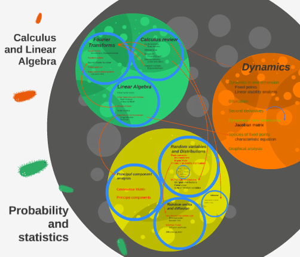

Peng He
He, Peng
何 鵬
Zhejiang University, Science 2008-2009
University of Hong Kong, 1st Honor, Statistics 2009-2012
UCLA, MCDB 2010-2011
Broad Institute, Rotation 2013
Caltech, Biology 2012-2019
A more detailed timeline of me is here

How is our body built?
Our organs and tissues coordinate various types of cells which move, talk, grow, sleep, mature, and die. What instructs these processes are ultimately programmed in the DNA of the organism.To understand the DNA language, genomicists have worked very hard searching for correlations between snippets of the codes and biological traits, either natural or artificially induced ones by perturbation.
And I've been one of them.
My PhD work was mainly about two projects where I 1) created artificially gene-edited cells that had novel DNA regions (called lincRNA genes) deleted to induce phenotypical changes; 2) took molecular snapshots of natural developmental processes in the mouse embryo to monitor changes in their gene expression profiles (left figure, part of the ENCODE project). The latter approach generated a lot of interesting hypotheses about how genes work, how they are dictated in groups, and where their regulation codes sit in the DNA sequence.
As a computational biologist, I independently developed a whole workflow of single-cell transcriptome analysis on MATLAB along with a novel "DeepTree" algorithm to effectively select feature genes based on co-expression. I also collaborated with multiple biochemists and developmental biologists, to study the DNA codes in a variety of physiological and biochemical contexts in mouse, drosophila, human cell lines, C. elegans and sea urchin.
In my postdoctoral study with Dr. Sarah Teichmann and Dr. John Marioni as part of the Human Cell Atlas (HCA) effort, I had the opportunity to extend my PhD work in mice to humans. By integrating human and mouse limb atlases using an in-house workflow I optimised, I identified profound conservation as well as temporal differences in ectoderm maturation and haematopoiesis between mice and humans. I further worked with our experimental team to design complementary spatial transcriptomic experiments to profile the whole-transcriptome at moderate spatial resolutions (10X Visium) and a selected 90-plexed gene panel measured at subcellular resolution (in-situ sequencing). I integrated transcriptome signatures to both types of spatial data using existing and novel ways and dissected finer structures in classical spatial domains such as the distal mesenychme (or “progress zone”). This work not only uncovers novel cell states and spatial regions in limb development, but also provides a key resource for developmental and evolutionary biology communities.
In my second postdoctoral project, our team constructed a comprehensive cell atlas for the human prenatal lung. I developed a novel approach to aggregate datasets with a soft batch correction and a doublet cluster detection algorithm to complement existing ones, which resulted in a detailed map of 147 cell supported by literature and our in-situ validation experiments. Curiously, in the fine-grained lung atlas I identified multiple novel cell fate paths, especially the ones leading to a novel GHRL+ neuroendocrine subtype first observed by Cao et al. I further matched this new NE subtype to the NEUROD1+ type of small-cell lung cancer (SCLC) cells by transcriptome signature mapping. Furthermore, by integrating scRNA-seq data with scATAC-seq profiles of our matching sample materials, I identified key regulators for this novel cell state which passed our organoid-based functional sufficiency test. This work will provide a community resource for human lung development studies and insights for studying human SCLC. Our cell atlas also triggered two other companion projects and inspired a soft batch integration method and a powerful doublet removal method that I designed.

Mathematics in Biology Bi195
Transplanted from Harvard to Caltech and instructed by Prof. Markus Meister for many years, this course provides an opportunity for biologists to get some basic trainings in linear algebra, calculus, statistics and dynamics which they might use in diversed fields of bio-research.
The image on the left is a snapshot from my TA presentations, showing a rough structure of the course. For more information, please visit our course website and student feedback report
Related courses I have also taught include:
* Introduction to Computational Biology and Bioinformatics Bi181
* Human Genetics and Genomics Bi188
In the past, I had served on committees for Caltech C and Caltech Y Outdoor group. I had also founded Caltech Bioinformatics Club.
Additionally, I have been a newage composer (check out the demo below), pop song chord database manager and analyst, "cactus guy" of community garden, Chinese restaurants explorer, Caltech Glee Club baritone (and webmaster), half-marathon runner (1h 54min), manager of Mathematical Modeling Innovative Practice Base Team which won the 2012 ICM outstanding prize, team member of 好友速配 (a Complex Social Network data crowd-sourcing and mining app used by more than 800,000 users) and a Youtuber with more than 1,400,000 views.
phe在caltech.edu
ph532于cam.ac.uk
Mount Pleasant Halls, Cambridge, CB3 0BL, UK